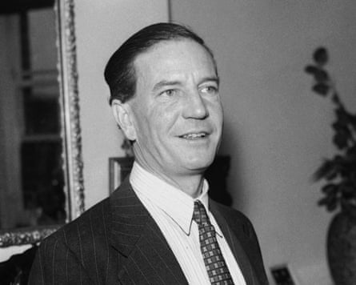

Britain’s spy chiefs were forced to launch one of the most sensitive and risky investigations since the cold war over fears a senior officer at the foreign intelligence service MI6 was a double agent for Russia .
The extensive hunt for the alleged mole, called Operation Wedlock, was run by MI6’s sister agency, MI5, which deployed a team of up to 35 surveillance, planning and desk officers, who travelled across the world.
One trip took an entire surveillance team to the Middle East for more than a week, the Guardian has been told, where the officers were put up in a CIA safe house. This trip was particularly hazardous, it’s understood, because the officers travelled to the country without the knowledge of its government, and would have been illegal under international law.
The investigation is believed to have lasted in one form or another for up to 20 years, but MI5 could not establish whether British intelligence had a mole – raising the possibility that an agent may have got away with spying for Russia.
“We thought we had another Philby on our hands,” said a source, referring to Kim Philby, the infamous MI6 double agent who was part of a group of Britons recruited by the Soviet Union, known as the Cambridge spy ring.
Kim Philby, who was the ‘third man’ in the Cambridge Five spy ring.Photograph: PA Media
MI6, the Secret Intelligence Service, is the UK spy agency responsible for overseas intelligence collection and agent handling; MI5, the Security Service, is the domestic intelligence agency that assesses threats to Britain’s national security.
The MI5 investigation began in the 1990s and is understood to have continued until at least 2015. By then, the officer being targeted by the Wedlock team had left MI6, which employed a staff of 2,500 at the time.
The tipoff about the alleged spy came from the CIA in the US, which was convinced a British intelligence official who was working in London had been relaying secrets to Russia.
During part of the investigation, Russia’s secret intelligence service, the FSB, was being run by Vladimir Putin.
A source with close knowledge of the operation said: “[We were told] the target was a Russian spy … The US believed he was leaking information to the Russians. He was suspect 1A. The job was taken more seriously than any other [MI5] was involved in. Wedlock eclipsed them all.”
The operation began in the mid-to-late 1990s after the CIA told its counterparts in British intelligence about its concerns.
A recently published book, The Spy in the Archive: How One Man Tried to Kill the KGB, by the former BBC security correspondent Gordon Corera, references the episode. The book says the CIA was concerned that an MI6 officer had been “turned by Moscow”, but that it was unclear who it was.
The Guardian has discovered that the UK identified the alleged spy and a team of MI5 specialists was tasked with following him. The team did not operate from MI5 headquarters at Thames House in Westminster.
Such was the sensitivity, the officer who led the surveillance was briefed about the operation in a church, according to a source. Some of those selected to be involved in the operation were initially told they were going on a training exercise, and were only given the terms of reference when they were outside Thames House.
The Wedlock surveillance team was based in a building in Wandsworth, south London – close to MI6’s riverside building in Vauxhall. The officers operated there under the name of a fake security business.
At the time, the team was told the target had a senior role at MI6 with access to a wide range of highly sensitive material. MI5’s technical operations team, known then as A1, covertly broke into the MI6 officer’s home and planted listening and video devices. A live feed beamed images back to an operations room.
An MI5 car outside his house was fitted with a camera inside a tissue box on the ledge behind the back seats, a source said. The extensive surveillance highlighted some conduct that raised cause for concern, but this was unrelated to spying, the Guardian has been told.
During the course of the operation, surveillance teams tracked his movements abroad, following him to cities across Europe , Asia and the Middle East, a very high-risk move as the team was operating outside MI5’s jurisdiction.
The Guardian has been told the team was sent into a country with real passports under false names, with the agents warned that if they were detained for any reason, they were “on their own … we can’t help you”.
Such was the concern about the alleged mole, intelligence chiefs considered they had no choice.
The man being surveilled was not thought to be working alone, a source said. Two other people, also based in London, were thought to be helping him. The source said Wedlock was a “highly unusual operation … the longest in recent memory and probably the most expensive”.
To have one UK intelligence agency in effect spying on another was extraordinary, the source said. “MI5 never got the conclusive proof it was looking for,” they added. They said that if it was not him, then potentially MI6 “still has a mole to find”.
One concern among those who worked on the operation was that the target, a specialist himself, became aware he was being watched.
A Whitehall source declined to comment.